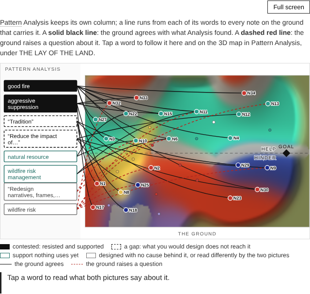
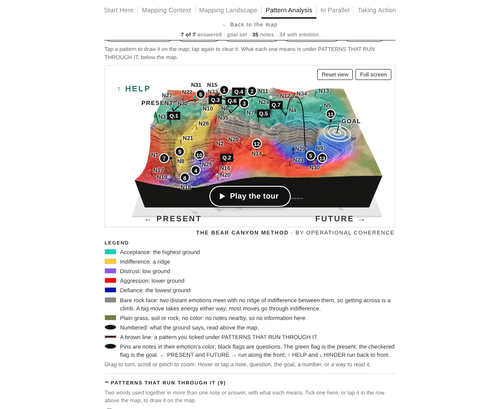
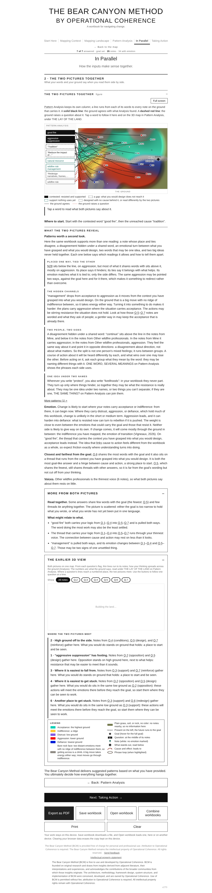

In Parallel, as it was


The page's text
WHAT THE TWO PICTURES REVEAL
Patterns worth a second look.
Here the same workbook supports more than one reading: a note whose place and ties disagree, a disagreement hidden under a shared word, an emotional turn between what you have grasped and what you would design, two words that may be one idea, and two big ideas never held together. Each one below says which readings it allows and how to tell them apart.
PLACED ONE WAY, TIED THE OTHER
N28 sits below the line, on aggression, but most of what it shares words with sits above it, mostly on aggression. Its place says it hinders; its ties say it belongs with what helps. Its emotion matches what it is tied to; only the side differs. The same aggression may be pointed two ways, against the goal here and for it there, which makes it something to redirect rather than overcome.
THE HIDDEN CHANNELS
“management” drops from acceptance to aggression as it moves from the context you have grasped into what you would design. On the ground that is a big move with no ridge of indifference between, so it takes energy either way. Turning it into something to do makes it harder: the plans carry aggression where the situation carries acceptance. The actions may be stirring resistance the situation does not hold. Look at how those Q.5–Q.7 notes are worded and what they ask of people; a gentler way in may keep the acceptance that is already there.
TWO PEOPLE, TWO SIDES
A disagreement hidden under a shared word: “continue” sits above the line in the notes from Mine, and below it in the notes from Other wildfire professionals. In the notes from Mine it carries aggression; in the notes from Other wildfire professionals, aggression. They feel the same way about it and point it in opposite directions: a disagreement about direction, not about what matters. So the split is not one person's mixed feelings; it runs between groups. A course of action about it will be heard differently by each, and what wins over one may lose the other. Before acting on it, ask each group what they mean by the word: they may be naming different things with it. ONE WORD, SEVERAL MEANINGS on Pattern Analysis shows the phrases each side uses.
ONE IDEA UNDER TWO NAMES
Wherever you write “protect”, you also write “livelihoods”: in your workbook they never part. They turn up only where things hinder, so together they may be what the resistance is really about. They may be one idea under two names, or two things you can’t separate; if they are one, THE SAME THING? on Pattern Analysis can join them.
Emotion. Change is likely to start where your notes carry acceptance or indifference: from there, it can begin now. Where they carry distrust, aggression, or defiance, which hold much of this workbook, change is unlikely in the short or medium term. Aggression leads, and it can harden into defiance: what is resisted now can turn to rebellion if it is pushed. The weight is close to even between the emotions that could carry the goal and those that resist it. Neither side is likely to give way on its own. If change comes, it will come mostly through the ground in between: the indifference you have mapped, the emotion of transition (Vigneaux, 2026). On “good fire”, the thread that carries the context you have grasped into what you would design, acceptance leads instead. The idea that links cause to action feels different from the workbook as a whole, so expect friction exactly where understanding turns into doing.
Closest and farthest from the goal. Q.6 shares the most words with the goal and it also sits on a thread that runs from the context you have grasped into what you would design. It is both the most goal-like answer and a hinge between cause and action, a strong place to start. Q.5, which shares the fewest, still shares threads with other answers, so it is far from the goal's wording but not cut off from your thinking.
Voices. Other wildfire professionals is the thinnest voice (6 notes), so what both pictures say about them rests on little.
MORE FROM BOTH PICTURES
Read together. Some answers share few words with the goal (the fewest: Q.5) and few threads tie anything together. The picture is scattered: either the goal is too narrow to hold what you wrote, or what you wrote has not yet been put in one language.
What might relate to what.
“good fire” both carries your logic from Q.1–Q.4 into Q.5–Q.7 and is pulled both ways. The word doing the most work may also be the least settled.
The thread that carries your logic from Q.1–Q.4 into Q.5–Q.7 runs through your thinnest voice. The connection between cause and action may rest on less than it looks.
“management” is pulled both ways, and its emotion changes between Q.1–Q.4 and Q.5–Q.7. Those may be two signs of one unsettled thing.
THE EARLIER 3D VIEW
Both pictures on one map. From each question’s flag, thin lines run to its notes: how your thinking spreads across the ground (Analysis). The numbers are what the ground says, read under THE LAY OF THE LAND on Pattern Analysis. Where a question’s lines reach a numbered place, the two pictures meet. Use the buttons to follow one question at a time.
WHERE THE TWO PICTURES MEET
2 · High ground off to the side. Notes from Q.4 (conditions), Q.5 (design), and Q.7 (reinforce) gather here. What you would do stands on ground that holds: a place to start and be seen.
1 · “aggressive suppression” has footing. Notes from Q.2 (opposition) and Q.5 (design) gather here. Opposition stands on high ground here, next to what helps: resistance that may be easier to meet than it sounds.
3 · Where it is easiest to fall from. Notes from Q.3 (support) and Q.7 (reinforce) gather here. What you would do stands on ground that holds: a place to start and be seen.
4 · Where it is easiest to get stuck. Notes from Q.2 (opposition) and Q.5 (design) gather here. What you would do sits in the same low ground as Q.2 (opposition): these actions will meet the emotions there before they reach the goal, so start them where they can be seen to work.
6 · Another place to get stuck. Notes from Q.3 (support) and Q.6 (redesign) gather here. What you would do sits in the same low ground as Q.3 (support): these actions will meet the emotions there before they reach the goal, so start them where they can be seen to work.
The whole tab
